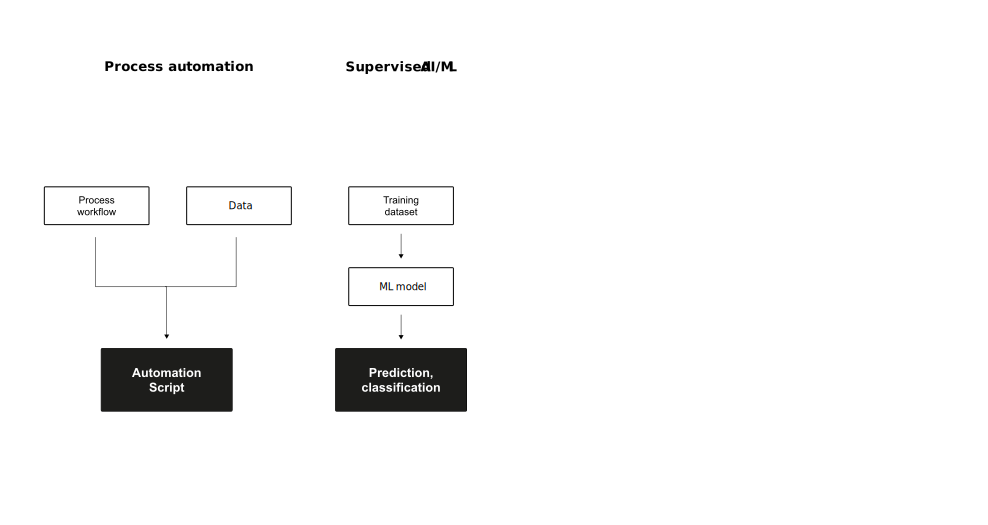
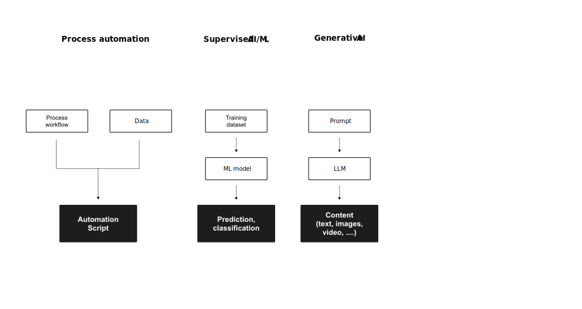

Agentic AI
Business Value Creation with IT (BVC)
Neu-Ulm University of Applied Sciences
March 10, 2025
Agents
Rational agents

Exercise
Under which circumstances does a vacuum cleaning agent act rational?
Performance measure
If we use, to achieve our purposes, a mechanical agency with those operation we cannot interfere once we have started it […] we had better be quite sure that the purpose built into the machine is the purpose which we really desire Wiener (1960, p. 1358)
It is difficult to formulate a performance measure correctly. This is a reason to be careful.
Rationality vs. perfecteion
Rationality is not the same as perfection.
- Rationality maximizes expected performance
- Perfection maximizes actual performance
- Perfection requires omniscience
- Rational choice depends only on the percept sequence to date
Agent types
Simple reflex agents

Model-based reflex agents
Goal-based agents

Utility-based agents
Recap
What are the main differences between the agents?
Learning agents

Rational agents
A rational agent is one
that does the right thing.
Utility-based learning agents are rational agents as they act so as to achieve the best outcome or, when there is uncertainty, the best expected outcome. This means that for each possible percept sequence, a rational agent should select an action that is expected to maximize its performance measure, given the evidence provided by the percept sequence and whatever built-in knowledge the agent has, which evolves over time (Russel & Norvig, 2022, p. 58).
Evolution of agents



Agentic AI
Definition
Agentic AI is an emerging paradigm in AI that refers to autonomous systems designed to pursue complex goals with minimal human intervention. Acharya et al. (2025, p. 18912)
Core characteristics of Agentic AI are
- Higher autonomy and goal complexity
- Ability to adapt to environmental and situational unpredictabilities
- Independent decision-making
Comparison with traditional AI
| Feature | Traditional AI | Agentic AI |
|---|---|---|
| Primary purpose | Task-specific automation | Goal-oriented autonomy |
| Human intervention | High (predefined parameters) | Low (autonomous adaptability) |
| Adaptability | Limited | High |
| Environment interaction | Static or limited context | Dynamic and context-aware |
| Learning type | Primarily supervised | Reinforcement and self-supervised |
| Decision-making | Data-driven, static rules | Autonomous, contextual reasoning |
Comparison of agent types
| Feature | Classical Agents | Learning Agents | Agentic AI |
|---|---|---|---|
| Primary Purpose | Fixed-task automation | Reward-driven optimization | Goal-oriented autonomy |
| Adaptability | Low | Moderate | High |
| Learning Type | Supervised | Reinforcement Learning | Hybrid, including RAG and Memory |
| Applications | Static systems | Dynamic environments | Complex, multi-objective tasks |
Applications
Key application areas of Agentic AI are, for instance:
- Healthcare — patient monitoring, early warning systems, personalized care management
- Finance — algorithmic trading, fraud detection, personalized financial advice
- Manufacturing — predictive maintenance, optimization of production processes
- Education — assisting learners by tailoring educational content
- Software Engineering — from code completion to autonomous problem-solving
Workflow patterns
Anthrophic (2024) discusses five key workflow patterns that can be implemented when designing agentic AI systems:
- Prompt chaining — sequentially connecting prompts; outputs become inputs; creates complex reasoning flows and multi-step processes
- Routing — directs tasks to specialized components based on task type; improves efficiency through targeted processing
- Parallelization — processes multiple subtasks simultaneously; increases throughput and handles independent workstreams
- Orchestrator-workers — central orchestrator delegates to specialized worker agents; manages coordination, integration, and quality control
- Evaluator-optimizer — separate components to generate, evaluate, and refine solutions; enables iterative improvement and higher quality outputs
Governance and accountability
As agentic AI systems act autonomously, safety and accountability are critical aspects (Shavit et al., 2023).
- Suitability assessment of the agent for the specific task
- Limitation of scope and potentially approval requirements for certain actions
- Establishment of default behaviors for agents
- Ensuring traceability of agent activities
- Implementation of automatic monitoring
- Possibility of attributability of actions
- Interruptibility of the agent and maintenance of human control
Human-AI interaction
From tools to teammates
Seeber et al. (2020) highlight a fundamental shift in how we think about AI systems.
| Traditional AI | AI as Teammates |
|---|---|
| Role: Tool to be used | Role: Active collaboration partner |
| Interaction: Responds to commands | Interaction: Engages proactively |
| Function: Task automation | Function: Complex problem-solving |
| Agency: Limited/directed | Agency: Autonomous with initiative |
| Integration: System integration | Integration: Social & team integration |
Critical design areas
Seeber et al. (2020) identify three interconnected design areas that must be considered when developing AI agents as teammates:
- Machine artifact design
- Collaboration design
- Institution design
Role of AI in teams
According to Dennis et al. (2023), AI agents can support human teams in various aspects.
Three fundamental affordances that AI team members provide:
- Communication support — enables coordination and reminders, review and feedback, delegation
- Information processing support — includes data cataloging, information search and retrieval, information analysis, organization, creation and management of content indexes
- Process structuring and appropriation — involves planning and scheduling, task breakdown structures, task tracking and delivery, quality assurance and checking
Q&A
Literature
Footnotes
The agent function maps any given percept sequence to an action (an abstract mathematical description).
The term percept refers to the content an agent’s sensors are perceiving. The percept sequence is the complete history of everything an agent has ever perceived.
Rectangles are used to denote the current internal state of the agent’s decision process, rectangles with rounded corners to represent the background information used in the process.